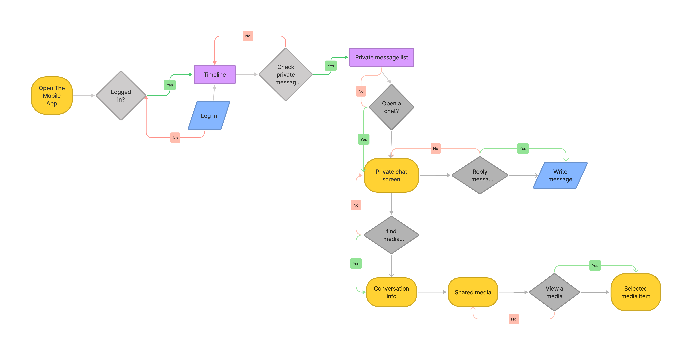
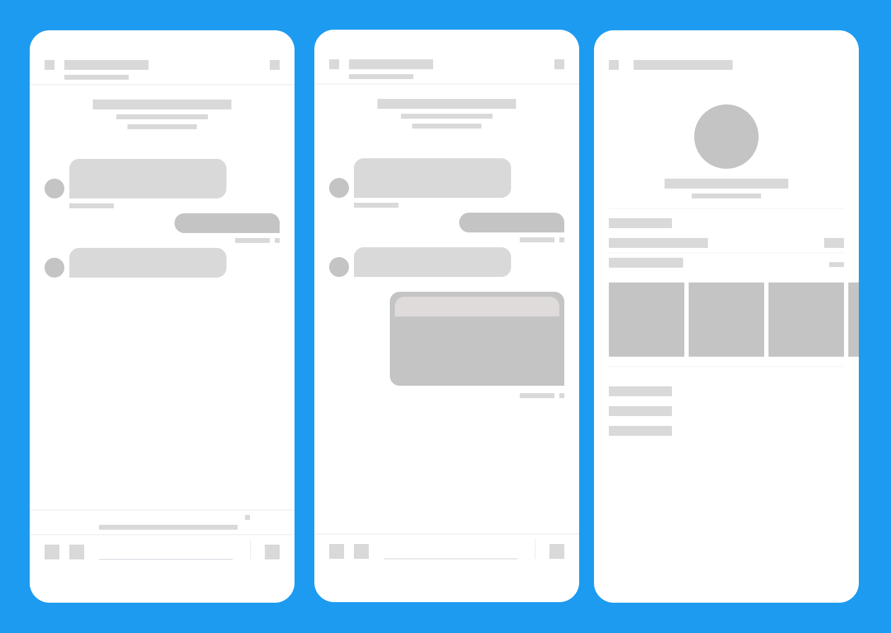
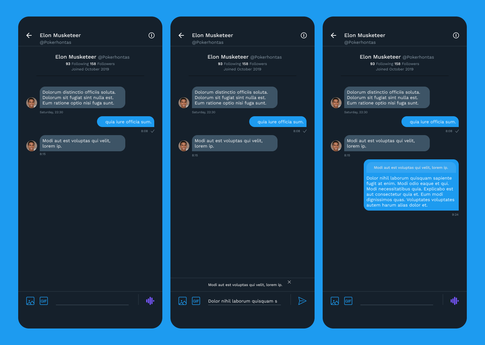
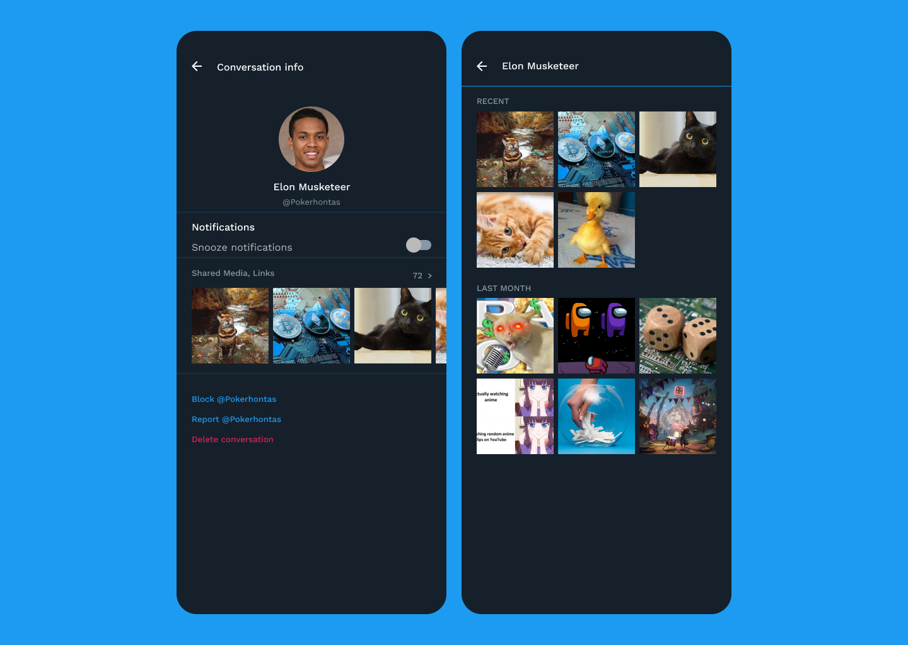

According to Wikipedia, Twitter is a microblogging and social networking platform where users post and interact with messages known as tweets. In 2013, Twitter introduced direct message, popurlarly known as DM, a feature that enables users to have private conversations about public tweets amongst other things.
THE PROBLEM
After talking to a few users of the twitter mobile application to know what they like about the app and areas they'd like to see improved, here is what I discovered:
- Users have trouble finding old shared media and messages.
- Users reported that replying to/understanding consecutive messages is tedious.
However, since Twitter recently introduced a feature that allows users search for messages within chats using keywords, the focus of this case-study will be on the unresolved problems.
OBJECTIVE
Design a solution that is usable and users are familiar with.
THE SOLUTION
These are the solutions that I came up with given my re-design objective:
- Introduce the swipe to reply feature that many messaging applications have already adopted.
- Include a shared media section in an already existing page within the DM.
THE PROCESS
- First, I mapped out the user flow.

User flow for new DM features - Then I drew some digital wireframe screens.

Digital wireframes - Final look for the swipe to reply feature.

DM reply user interface - Final look for the shared media addition.

Media history user interface
TAKEAWAY
I learned the importance of asking for product feedback from users while working on this project because sometimes, users have pain points to share but keep it to themselves because they do not have the right channels to address them to. It's also a faster way of collecting data than having to sift through app store reviews.